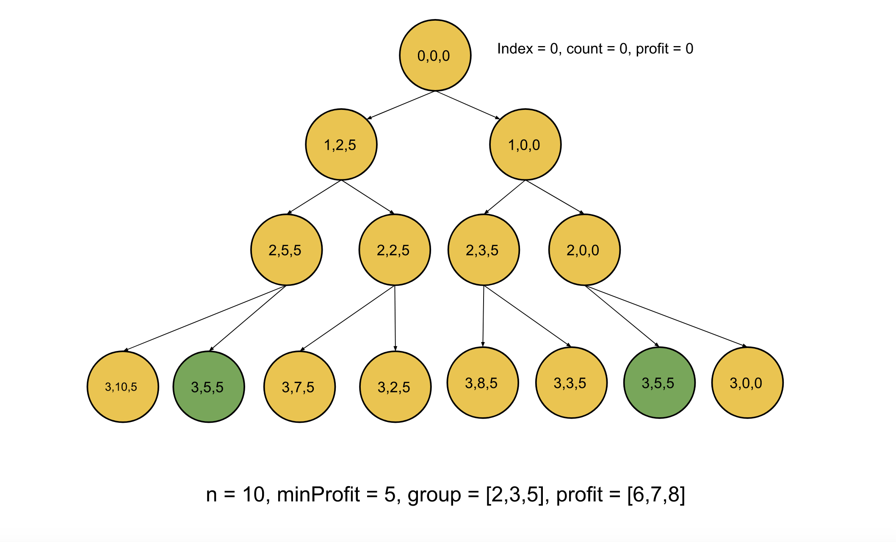

We have two lists, each of size MM; the first list,
group, represents the number of members that each of the MM
crimes needs, and the second list profits, represents the profit that each crime generates. We need to
find the number of subsets of these crimes such that a subset has no more than NN
criminals in it, and the total profit has to be at least minProfit. Also, since the number could be
huge, we need to return it modulo 109+710^9 + 7.
Intuition
Each of the MM crimes in the list has two options, either we consider it in the current subset, or we don't. If we add this crime to the subset, we need to ensure first that the number of members doesn't exceed NN; also, the total profit will be increased by the profit of this crime. If we don't consider this crime, there would be no change in the number of members or the total profit. The total number of such subsets would be the sum of the count of these two choices for each crime. Let's consider what parameters we need to have in this recursive approach:
index: The index of the crime that we are considering currently.count: The total number of members we have in the current subset we have selected.profit: The total profit we have generated so far with the current subset we selected.We start with index = 0, i.e. from the first crime, count = 0 denotes we have used no
members so far, and profit = 0 as the total profit so far is zero. Now, for each crime, we make one of
the two choices that we discussed before and sum the count of both these choices modulo 109+710^9 + 7.
The only problem with this approach is that we are iterating over each of the two possibilities, and for MM
crimes, there could be 2M2^M
possible scenarios. Hence, this approach isn't efficient. If we observe the below figure, there are repeated
subproblems. Notice the green nodes are repeated subproblems signifying that we have already solved these
subproblems before. To avoid recalculating results for previously seen subproblems, we will memoize the result for
each subproblem. The next time we need to calculate the result for the same set of parameters {index, count,
profit}, we can look up the result in constant time instead of recalculating the result.

One more observation that could help us reduce the number of states is that once the total profit exceeds minProfit,
it doesn't matter what the actual profit is anymore because we only care about making at least
minProfit. If the profit is at least minProfit, we will mark the current selection as a
profitable scheme; otherwise, not. Therefore, the profit in the states can be stored as min(profit,
minProfit) so that the possible values for profit always remains less than or equal tominProfit,
which can potentially save us many states in the memoization.
Algorithm
memo with -1; this array will keep the calculated results, and
-1 represents that the answer has not been calculated for these states yet.
index, count and profit as 0.
memo is
-1 then return that value. If not, then go into the recursion.
totalWays, in this case, the new recursion state would be {index + 1, count, profit}.
index to totalWays. The new recursion state would be {index + 1, count
+ group[index], min(profit + profits[index], minProfit)}.
index is equal to MM,
then we can return 1 if the profit is more than minProfit otherwise we
return 0.
totalWays.Implementation
Java
class Solution {
int mod = 1000000007;
int[][][] memo = new int[101][101][101];
int find(int pos, int count, int profit, int n, int minProfit, int[] group, int[] profits) {
if (pos == group.length) {
// If profit exceeds the minimum required; it's a profitable scheme.
return profit >= minProfit ? 1 : 0;
}
if (memo[pos][count][profit] != -1) {
// Repeated subproblem, return the stored answer.
return memo[pos][count][profit];
}
// Ways to get a profitable scheme without this crime.
int totalWays = find(pos + 1, count, profit, n, minProfit, group, profits);
if (count + group[pos] <= n) {
// Adding ways to get profitable schemes, including this crime.
totalWays += find(pos + 1, count + group[pos], Math.min(minProfit, profit + profits[pos]), n, minProfit, group, profits);
}
return memo[pos][count][profit] = totalWays % mod;
}
public int profitableSchemes(int n, int minProfit, int[] group, int[] profit) {
// Initializing all states as -1.
for (int i = 0; i <= group.length; i++) {
for(int j = 0; j <= n; j++) {
Arrays.fill(memo[i][j], -1);
}
}
return find(0, 0, 0, n, minProfit, group, profit);
}
}
C++
class Solution {
public:
int mod = 1e9 + 7;
int memo[101][101][101];
int find(int pos, int count, int profit, int n, int minProfit, vector& group, vector& profits) {
if (pos == group.size()) {
// If profit exceeds the minimum required; it's a profitable scheme.
return profit >= minProfit;
}
if (memo[pos][count][profit] != -1) {
// Repeated subproblem, return the stored answer.
return memo[pos][count][profit];
}
// Ways to get a profitable scheme without this crime.
int totalWays = find(pos + 1, count, profit, n, minProfit, group, profits);
if (count + group[pos] <= n) {
// Adding ways to get profitable schemes, including this crime.
totalWays += find(pos + 1, count + group[pos], min(minProfit, profit + profits[pos]), n, minProfit, group, profits);
}
return memo[pos][count][profit] = totalWays % mod;
}
int profitableSchemes(int n, int minProfit, vector& group, vector& profit) {
memset(memo, -1,sizeof(memo));
return find(0, 0, 0, n, minProfit, group, profit);
}
};
Complexity Analysis
Here, NN
is the maximum number of criminals allowed in a scheme, MM
is the size of the list group, and KK
is the value of minProfit.
Time complexity: O(N⋅M⋅K)O(N \cdot M \cdot K).
We have three parameters index, count and profit. The
index can vary from 0 to M - 1, and the count can again
vary from 0 to N - 1 (as we consider crime only if it doesn't exceed the limit of
NN), the
last param profit can vary largely but since we cap its value to minProfit it
values can vary from 0 to minProfit. We need to calculate the answer to each of
these states to solve the original problem; hence the total computation would be O(N⋅M⋅K)O(N \cdot M \cdot K).
Space complexity: O(N⋅M⋅K)O(N \cdot M \cdot K).
The size of memo would equal the number of states as (N⋅M⋅K)(N \cdot M \cdot K). Although we used the maximum value of 101101 in the code to simplify things, we can also use the
original values in the input as the size of memo. Also, there would be some space in the
recursion as well, the total number of active recursion calls could be NN
one for each crime, and hence the total recursion space would be O(N)O(N).
Intuition
In the previous approach, the recursive calls incurred stack space. This can be avoided by applying the same approach iteratively, which is generally faster than the top-down approach. We will follow a similar approach as the previous one, just in a reverse manner.
We will start with the previous approach's base case and build up the answers for the remaining states using the recursive equation that we will derive from the previous approach.
The previous approach had three states {index, count, profit}, and the value for these states is stored
in, let's say, dp[index][count][profit], now according to our previous solution, the number of ways to
get profitable scheme by not including the crime at index is equal to dp[index +
1][count][profit]. Similarly, the number of ways to get a profitable scheme by including the crime at
index (only if it doesn't make the member count more than NN)
is equal to dp[index + 1][count + group[index]][min(profit + profits[index], minProfit)].
Hence the recursive equation could be written as:
dp[index][count][profit] = dp[index + 1][count][profit] + take
Where
take = dp[index + 1][count + group[index]][min(profit + profits[index], minProfit)]ifcount + group[index] <= N, otherwise0
Since we need to start from the previous approach's base condition, we will initialize the values dp[M][count][minProfit]
as 1s and the rest as 0s. This is because if we reach the end of the list
(index is M), and the count is any value less than NN
with profit minProfit, this is a profitable scheme; otherwise, it is not.
Algorithm
Initialize the dp array with states as index = group.size, profit =
minProfit, and count with any value from 0 to N as 1; the
remaining values would be 0.
Loop over index from group.size() to 0, nested with count
from 0 to NN
and nested with profit from 0 to minProfit, for each state:
dp[index +
1][count][profit]; hence initialize dp[index][count][profit] with this.
index won't exceed the member's threshold of NN, add
the ways
dp[index + 1][count + group[index]][min(minProfit, profit + profits[index])].
Return dp[0][0][0].
Implementation
Java
class Solution {
int mod = 1000000007;
int[][][] memo = new int[101][101][101];
int find(int pos, int count, int profit, int n, int minProfit, int[] group, int[] profits) {
if (pos == group.length) {
// If profit exceeds the minimum required; it's a profitable scheme.
return profit >= minProfit ? 1 : 0;
}
if (memo[pos][count][profit] != -1) {
// Repeated subproblem, return the stored answer.
return memo[pos][count][profit];
}
// Ways to get a profitable scheme without this crime.
int totalWays = find(pos + 1, count, profit, n, minProfit, group, profits);
if (count + group[pos] <= n) {
// Adding ways to get profitable schemes, including this crime.
totalWays += find(pos + 1, count + group[pos], Math.min(minProfit, profit + profits[pos]), n, minProfit, group, profits);
}
return memo[pos][count][profit] = totalWays % mod;
}
public int profitableSchemes(int n, int minProfit, int[] group, int[] profit) {
// Initializing all states as -1.
for (int i = 0; i <= group.length; i++) {
for(int j = 0; j <= n; j++) {
Arrays.fill(memo[i][j], -1);
}
}
return find(0, 0, 0, n, minProfit, group, profit);
}
}
C++
class Solution {
public:
int mod = 1e9 + 7;
int memo[101][101][101];
int find(int pos, int count, int profit, int n, int minProfit, vector& group, vector& profits) {
if (pos == group.size()) {
// If profit exceeds the minimum required; it's a profitable scheme.
return profit >= minProfit;
}
if (memo[pos][count][profit] != -1) {
// Repeated subproblem, return the stored answer.
return memo[pos][count][profit];
}
// Ways to get a profitable scheme without this crime.
int totalWays = find(pos + 1, count, profit, n, minProfit, group, profits);
if (count + group[pos] <= n) {
// Adding ways to get profitable schemes, including this crime.
totalWays += find(pos + 1, count + group[pos], min(minProfit, profit + profits[pos]), n, minProfit, group, profits);
}
return memo[pos][count][profit] = totalWays % mod;
}
int profitableSchemes(int n, int minProfit, vector& group, vector& profit) {
memset(memo, -1,sizeof(memo));
return find(0, 0, 0, n, minProfit, group, profit);
}
};
Complexity Analysis
Here, NN
is the maximum member allowed in the subset, MM
is the size of the list group, KK
is the maximum value of minProfit.
Time complexity: O(N⋅M⋅K)O(N \cdot M \cdot K).
Similar to the previous approach, we would still need to process each of the states to solve the problem, and hence the total time complexity would remain the same as O(N⋅M⋅K)O(N \cdot M \cdot K).
Space complexity: O(N⋅M⋅K)O(N \cdot M \cdot K).
This time there won't be any stack space consumption, but the array dp would still be of the
size (N⋅M⋅K)(N \cdot M \cdot K) and hence the space complexity would be O(N⋅M⋅K)O(N \cdot M \cdot K).